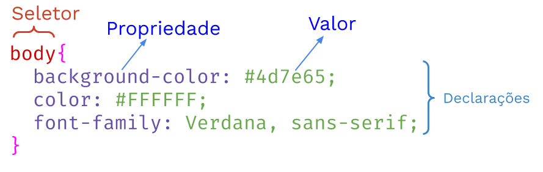

# Objetivos
Conhecer a liguagem de estilo CSS e
entender como utiliza-la para desenvolvimento de página Web.
## Contexto
Páginas Web
## Problema
HTML é uma liguagem para estruturação de conteúdo, porém é muito pobre em design.
Portanto, como criar páginas Web bonitas, que chamem atenção?
# Cascading Style Sheets - CSS
## O CSS formata a informação entregue pelo HTML.
Essa informação pode ser qualquer coisa: imagem, texto, vídeo, áudio ou qualquer outro elemento criado.
Sintaxe do CSS

{} (chaves) determina o inicio e o fim de um bloco
: (dois pontos) separa a propriedade do valor
; (ponto e vírgula) encerra uma declaração
Ambos são obrigatórios
## Vamos praticar!!!
Vamos começar melhorando o design visual da página criada na aula anterior\
[Link do código HTML da aula anterior](https://github.com/jesielviana/projeto-supervisionado/blob/master/aula-03/index.html)
O que vamos fazer?
Vamos deixar a página com a cor de fundo verde e o texto branco
Crie um arquivo CSS com o código abaixo
body {
background-color: #4d7e65;
color: white;
}
Como integrar o CSS ao HTML
Importe o arquivo estilo.css para dentro da página HTML.
A importação deve ser feita dentro da tag <head> do arquivo HTML, conforme abaixo.
body {
background-color: #4d7e65; /* cor de fundo */
color: white; /* cor da fonte */
font-family: Verdana, sans-serif; /* fonte do texto */
font-size: 16px; /* tamanho da fonte */
}
header {
width: 100%; /* largura do elemento */
height: 300px; /* altura do elemento */
border: 1px solid #000; /* largura, tipo e cor da borda do elemento */
}
header img{
width: 200px;
border-radius: 50%;
}
main{
min-height: 400px;
}
footer{
border: 1px solid #fff; /* largura, tipo e cor da borda do elemento */
height: 100px;
text-align: center;
}
## Atividade
1. Escreva o código CSS da sua página conforme o layout do seu rascunho
1. Integre o código CSS com a código HTML
1. Envie o código CSS e o código HTML da sua página para o Google Classroom
## Referências
- [O que é CSS](https://developer.mozilla.org/pt-BR/docs/Learn/CSS/First_steps/O_que_e_CSS)
- [Sintaxe do CSS](https://developer.mozilla.org/pt-BR/docs/Web/CSS/sintaxe)
- [Iniciando com CSS](https://developer.mozilla.org/pt-BR/docs/Learn/CSS/First_steps/Iniciando)
- [Propriedades CSS](https://developer.mozilla.org/pt-BR/docs/Web/CSS/CSS_Reference)
- [Propriedades CSS (em inglês)](https://www.w3schools.com/css/default.asp)
- [Apostila Caelum - Introdução a HTML e CSS](https://www.caelum.com.br/apostila-html-css-javascript/introducao-a-html-e-css/)